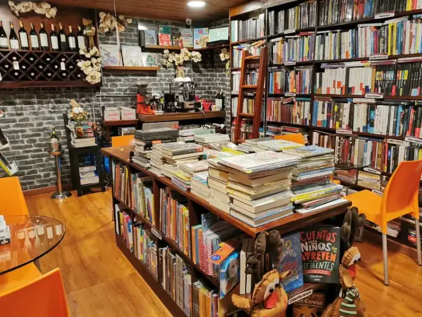
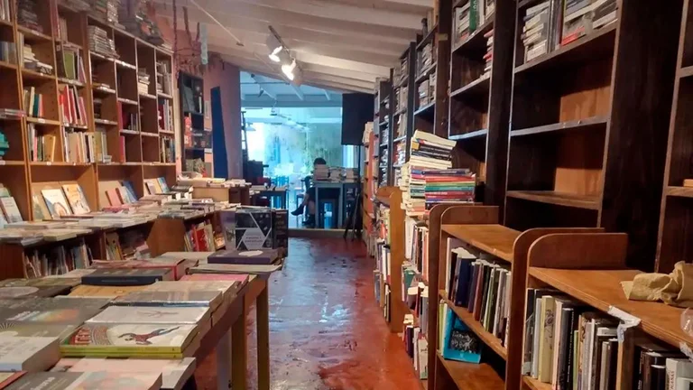

La bibliotecas son muy pesadas, en kilogramos, y el mayor terror de cualquier buen lector es enfrentarse a una mudanza. La vida actual hace que ese escenario sea bastante frecuente y que a veces tengamos que "deshacernos" de algunos libros. Pueden ser muy variados los motivos por los cuales se realiza un intercambio de libros ,los libros cambian de manos, en cualquier caso las librerías de viejo han tenido siempre un valor fundamental para dar nueva vida los volúmenes, otra posibilidad es donar los libros a la biblioteca pública más cercana o a bibliotecas de entidades sin ánimos de lucro

Las librerías que han tenido que cerrar en Colombia durante 2022
En Bogotá, tras casi 20 años de labores, la librería Luvina cerró sus puertas (el lugar será aprovechado por Matorral, precisamente) y migró a la virtualidad; en Armenia, Árbol de Libros, la librería fundada por la periodista Claudia Morales, cesó sus actividades tras apenas unos años en la escena.

La primera red virtual de bibliotecas
Fue presentado en sociedad recientemente, durante la 46 edición de la Feria Internacional del Libro de Buenos Aires y consta de un catálogo online conformado por las 14 bibliotecas que integran la red y cuenta con más de 100.000 libros.

Se inundó la librería Notanpuan y ahora preparan una “Feria de libros mojados”
Está en San Isidro, en una casa vieja, y el domingo se les arruinaron unos 700 libros. La idea es ayudar a hacer frente a las deudas que vienen y, también, mostrar el cariño a los libros.